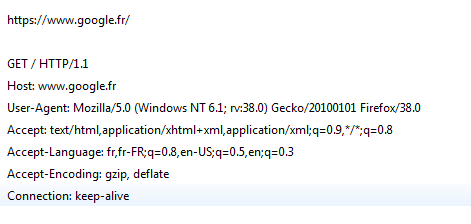
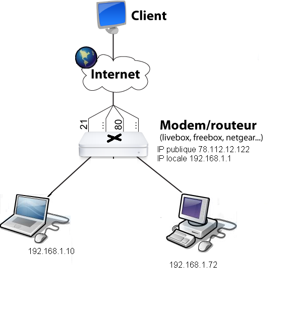
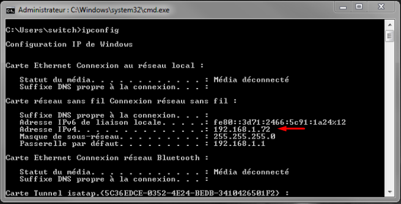
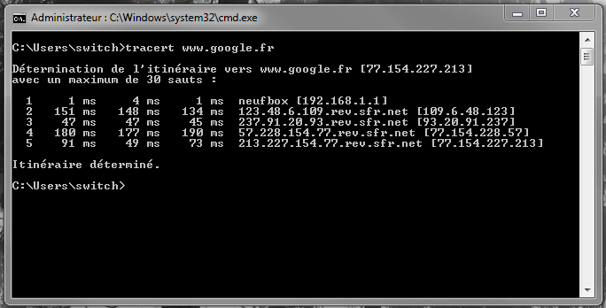

Linus Torvald
Un métier: Ingénieur réseau
Internet et votre ordinateur
Pour montrer l'interaction entre "internet" et notre ordinateur je vais prendre l'exemple d'une requête de page web
I. Le PC
Pour qu'un utilisateur ai accès à internet il a besoin d'un navigateur (browser). C'est grâce à celui-ci que l'utilisateur a une interface
graphique (GUI) et qu'il peut envoyer et recevoir des informations sur internet.
Le port utilisé par ce type de logiciel est
par défaut 80 ou 443 pour le HTTPS. Quand l'utilisateur demande une page web il va utiliser le protocole HTTP (voir HTTPS) sans le savoir.

C'est son navigateur qui va formuler la requête compréhensible par le serveur web distant.
Il existe différents protocoles internet comme SMTP (mails:25), FTP (File transfert Protocols:21), Bittorent (p2p) etc ..
Requête HTTP GET standard
II. Le réseau local
A proprement parler notre ordinateur ne communique pas directement avec internet. Il passe par le biais du routeur (box internet)
pour avoir accès à internet.

Notre ordinateur ( 192.168.1.10 ) appartient au réseau local 192.168.1.0/24. On remarque d'autres appareils sur le réseau dont le routeur
192.168.1.1.
Quand l'ordinateur va demander une page web il va s'adresser en premier au routeur via divers protocoles.
Le routeur qui lui, est relié à internet, va demander la page et la retourner à notre PC.
Mais comme on l'a remarqué il y a plusieurs appareils sur le réseau et donc comment le routeur va-t-il savoir qui a demandé la page web ?
Grâce à l'adresse ip (Internet Protocol) codée sur 4 octets (32 bits) pour la version 4.

Commande ipconfig avec le Powershell windows
Il suffira au routeur de se rappeler de l'adresse ip qui lui a demandée la page pour lui donner la réponse de la requête. Ici une page web
III. Internet
Après notre routeur la requête va se retrouver sur internet. Elle va donc devoir trouver son chemin jusqu'au serveur demandé. Dans le
cas de ma requête sur www.google.fr elle va essayer de rejoindre le serveur dont l'IP publique est 77.154.221.248

En effet une machine a deux IP une locale (192.168.1.xxx) et une IP publique ici 77.154.221.248.
Lors de ma requête vers google je ne connais pas l'adresse du serveur distant mais je connais son nom de domaine www.goole.fr. C'est donc grâce un protocole (DNS) que je vais
résoudre l'adresse IP de la machine hébergent www.google.fr. C'est grâce à lui que ma requête va trouver son chemin à travers internet.
On remarque grâce à la commande tracert que notre requête va passer à travers plusieurs intermédiaires avant d'arriver à destination.
Cela montre une partie assez complexe d'internet.
Voilà comment de notre PC nous avons accès à internet.
- Dans un premier lieu cela se passe sur notre PC grâce à notre navigateur qui nous permet de formuler et d'interpreter des requêtes.
- Puis dans un second sur notre réseau local ou nos requêtes sont dirigées et proviennent depuis notre box (routeur).
- Et pour finir sur internet où nos requêtes se dirigent vers des serveurs distant qui, à leurs tours nous envoient des réponses à nos requêtes qui vont alors faire le chemin inverse pour apparaitre sur notre écran.